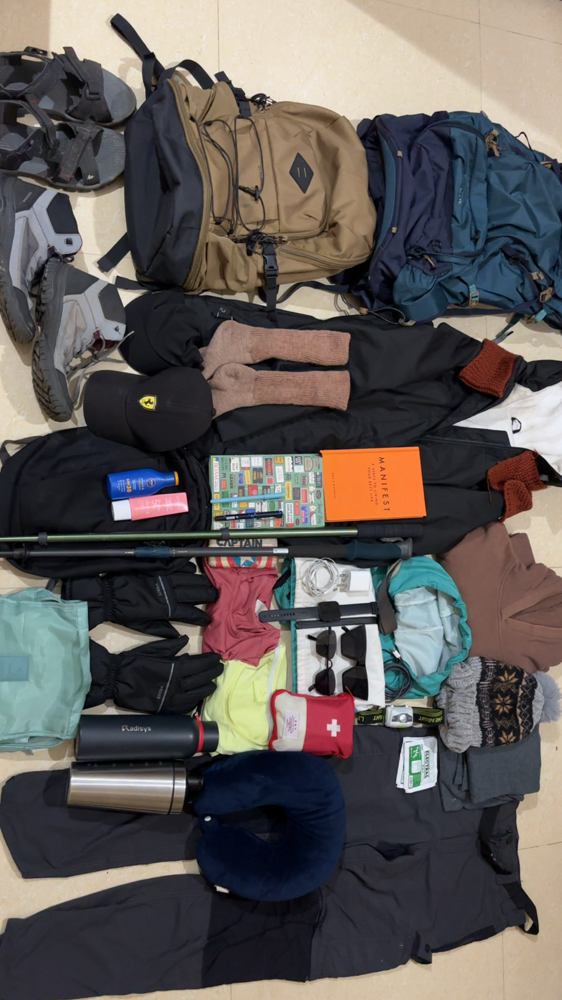
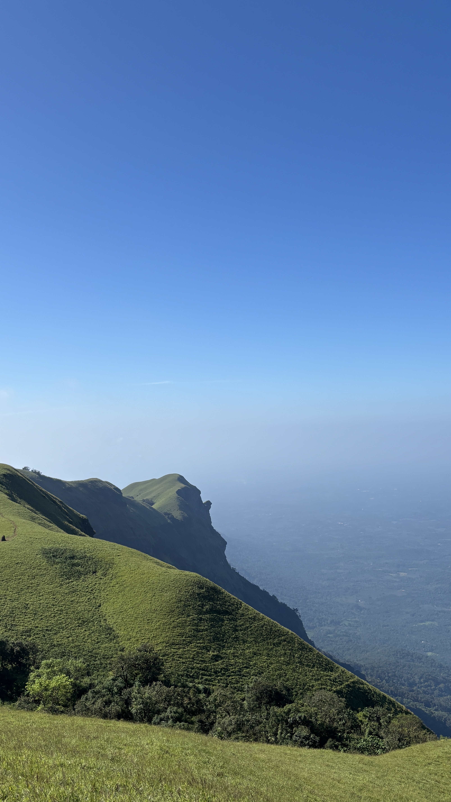
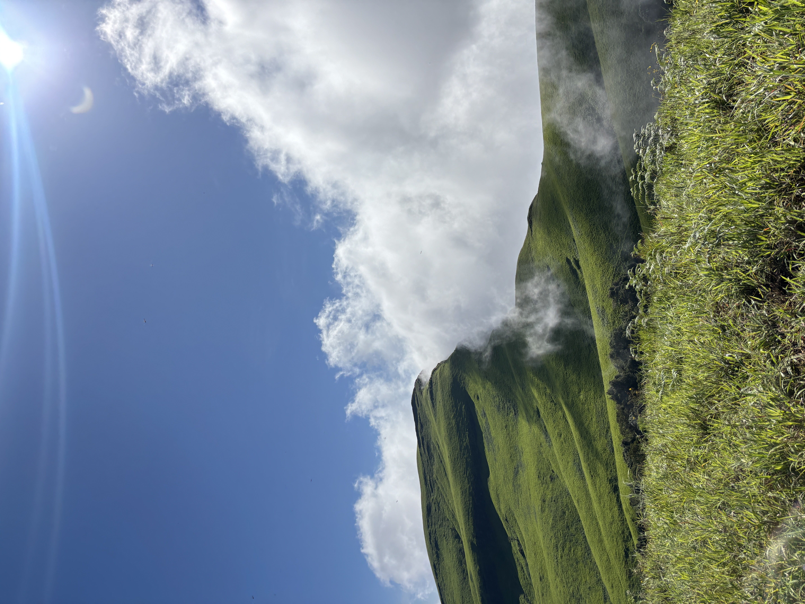

Everything that earns a place in your daypack for a Western Ghats day hike — and nothing that doesn't. Tap an item as you pack it.
Most overpacked bags aren't carrying gear — they're carrying anxiety. A day trek in the Western Ghats rarely lasts more than eight hours, and the terrain doesn't call for half of what ends up strapped to a first-timer's back. What it does call for is the right things, packed with intention: quick-dry over cotton, function over "just in case," and a bag light enough that you're still enjoying the view at hour six.
This list is built specifically for single-day hikes in the Ghats — humid, sudden rain, leech territory, slippery rock underfoot. No tents, no stoves, no camping gear. Just what actually earns its weight.



Leeches don't hurt — that's the problem. You often won't feel one until you see the blood. Salt on a cotton swab makes them let go instantly. Don't pull; it leaves the head behind.
Check the weather forecast the night before and again at dawn. Western Ghats monsoon systems can shift a clear morning into a washed-out trail by noon.
Tell someone your exact route and your expected return time — not just "going for a trek." Specifics are what make a search easy if you're ever late.
Start early. The first two hours of daylight are the driest, coolest, and least crowded — and they buy you a buffer if the trail takes longer than planned.
Whatever you carry up, carry back down — wrappers included. The trail is not managing your waste; your daypack is.
The lightest bag on the trail— She Explores, Packing Notes
usually belongs to the person
who's done this before.